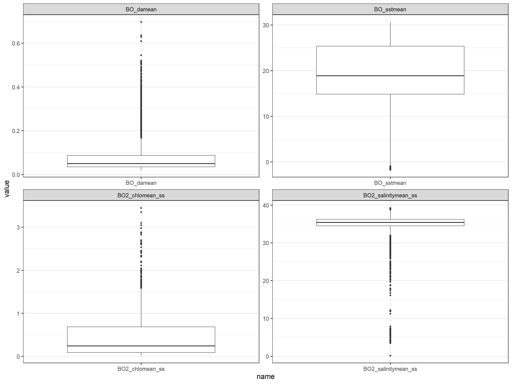
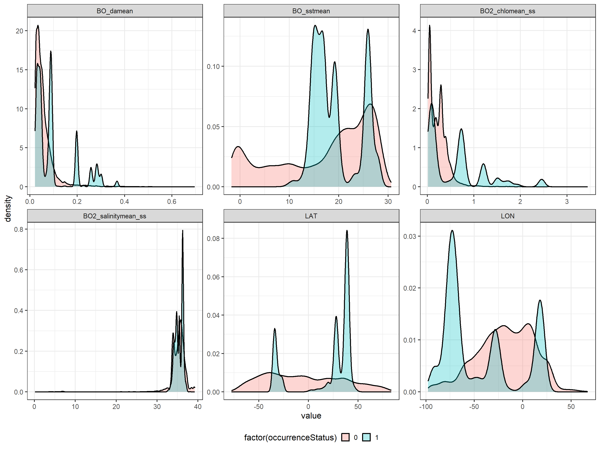
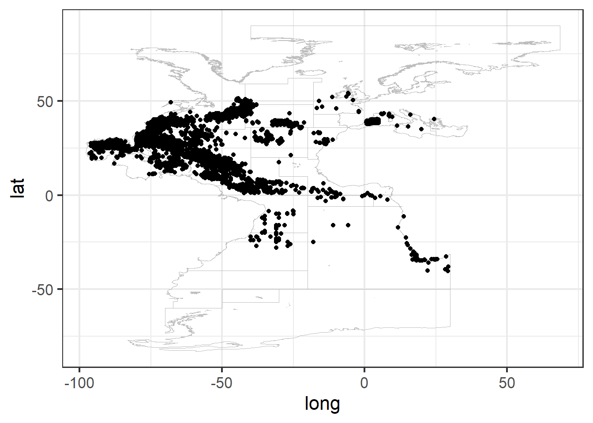

Chapter 5 Prepare final dataset
Loading required libraries
# library(rgdal) # to read shp
# library(raster) # to work with rasters
# library (here) # Libraries for reproducible workflow
# library (sp) # to perform raster
# library(HH) #to calculate for VIF (Variance Inflation Factor)
# library(ggplot2)# plots
# library(gridExtra)# multiple plots
# library(dplyr)
# library(RColorBrewer)#plotting colors
# library(fields)#ploting images
# library(marmap)#ploting world
# library(maptools)#mapping
# library(rstudioapi)
# theme_set(theme_bw(base_size = 16))5.1 Extract environmental data associated to presence-absence data
Once the environmental rasters and the species abundance data (including pseudo-absences) have been prepared, we need to merge both sources of data. First, we load the objects created in previous sections:
#load presence-absence data
load("data/outputs_for_modelling/PAdata.RData")
# load environmental rasters
library(sp)
library(raster)
load(file="data/env/myBioracle.layers.Rdata") Now we can extract the environmental data associated to each of the species data points using the function extract from the raster package. The method employed is bilinear that returns the interpolated value from the four nearest raster cells.
CHECK THE NAMES THROUGHOUT!! dat, data… mydata1.env.bil TOO LONG… I’m HAVING ERRORS WITH THIS. ONLY WORKS EXECUTED AFTER THE OTEHR… WHY?
mydata1.env.bil <- raster::extract(x=myBioracle.layers, y=dat[,c("LON","LAT")], method="bilinear", na.rm=TRUE, df=T)
head(mydata1.env.bil)We merge the presence/absence data and the environmental data:
data <- cbind(dat, mydata1.env.bil)We can conduct some quick checks on the new dataset:
dim(data)
str(data)
head(data)
summary(data)ZER DA bathymetry ZUTABEA? AZALDU BEHAR DA??
# LI'k GEHITUTAKO KODIGOA. KENDU?
plot(data$BO_bathymean, data$bathymetry)
abline(0,1, col=2)The new dataset has 30158 rows and 13 columns, and there are 162 NA’s in the environmental dataset. Note also that there are some positive bathymetries that correspond to points located very close to the coast. We remove both the points with NA’s and the points with positive bathymetries:
data <- subset(data, BO_bathymean<0)We check again the dataset:
dim(data)
summary(data) # 29435 sites : 4 are NAsThe resulting dataset has 29435, from which 4 have NA’s in BO2_chlomean_ss and BO2_salinitymean_ss. We save this dataset in a local file to work on it in subsequent steps.
LI: REMOVE THE 4 NA’s?? IT WILL FACILITATE MODEL COMPARISON
save(list="data", file="data/outputs_for_modelling/PAdata_with_env.RData")5.2 Exploratory plots of environmental variables
LI: This first chunk can be removed, but I’m having problems with the first subsection
load("data/outputs_for_modelling/PAdata_with_env.RData")Before starting the modelling process, we are going to explore the individual variables in the dataset.
The YEAR variable is only available for the presence data and the time coverage is quite different along time as shown by the following plot:
table(is.na(dat$YEAR), dat$occurrenceStatus) # NOTE THAT THE PSEUDO-ABSENCES DO NOT HAVE YEAR. So MAYBE BETTER TO REMOVE THIS PART.##
## 0 1
## FALSE 0 15079
## TRUE 15079 0library(dplyr)
library(tidyr)
library(ggplot2)
theme_set(theme_bw(base_size=16))
data %>%
# filter(!is.na(YEAR)) %>%
group_by(YEAR) %>%
summarise(N=n()) %>%
ggplot(aes(x=YEAR, y=N)) +
geom_bar(stat="identity", col="red", fill="red", alpha=0.5)
We can explore the distributions of each of the environmental variables by looking at the violin and boxplots and at the histograms and density plots as follows:
tmp <- data[, c("BO2_chlomean_ss","BO2_salinitymean_ss","BO_damean","BO_sstmean","BO_bathymean")]
tmp <- pivot_longer(data=tmp, cols=everything())
ggplot(data=tmp, aes(x=name, y=value)) +
geom_boxplot()+
facet_wrap(~name, scales="free")
ggplot(data=tmp, aes(x=name, y=value)) +
geom_violin(fill="red", alpha=0.3)+
geom_boxplot(width=0.1)+
facet_wrap(~name, scales="free")
ggplot(data=tmp, aes(x=value)) +
geom_histogram(aes(y= ..density.. ), colour=1, fill="red", alpha=0.3)+
geom_density(lwd=1)+
facet_wrap(~name, scales="free")
5.3 Exploratory plots of environmental variables depending on presence/absence data
To analyse if there are preferences for certain ranges of the environmental variables, we compare the distribution of the environmental variables for presence and absence data:
tmp <- data[, c("LON", "LAT", "BO2_chlomean_ss","BO2_salinitymean_ss","BO_damean","BO_sstmean","BO_bathymean","occurrenceStatus")]
tmp <- pivot_longer(data=tmp, cols=!occurrenceStatus)
ggplot(data=tmp, aes(x=factor(occurrenceStatus), y=value, fill=factor(occurrenceStatus), group=factor(occurrenceStatus))) +
geom_violin(alpha=0.3)+
geom_boxplot(fill="white", width=0.1)+
facet_wrap(~name, scales="free")+
theme(legend.position = "bottom",legend.background = element_rect(fill = "white", colour = NA))ggplot(data=tmp, aes(x=value, fill=factor(occurrenceStatus), group=factor(occurrenceStatus))) +
geom_density(lwd=1, alpha=0.3)+
facet_wrap(~name, scales="free")+
theme(legend.position = "bottom",legend.background = element_rect(fill = "white", colour = NA))
5.4 Correlation analysis
Some of the environmental variables can be correlated. The GGally package allows to easily produce pairplots of the variables and their correlation.
library(GGally)
tmp <- data[, c("LON","LAT","BO2_chlomean_ss","BO2_salinitymean_ss","BO_damean","BO_sstmean","BO_bathymean")]
ggpairs(tmp)
A more detailed analysis of the potential correlations can be conducted using the package ggcorrplot:
library(ggcorrplot)
tmp <- data[, c("LON","LAT","BO2_chlomean_ss","BO2_salinitymean_ss","BO_damean","BO_sstmean","BO_bathymean")]
mat <- cor(tmp, use="complete.obs")
p.mat <- cor_pmat(tmp)
ggcorrplot(mat, type = "lower", lab=T, p.mat = p.mat)
5.5 Variance Inflation Factor (VIF)
Furthermore, multicollinearity in regression analysis can be explored using the VIF (Variance Inflation Factor). The value of the VIF statistics indicate the level of multicollinearity with the rest of the variables:
- VIF equal to 1 = variables are not correlated
- VIF between 1 and 5 = variables are moderately correlated
- VIF greater than 5 = variables are highly correlated
There are several packages in R that allows to calculate the VIF statistics. In this case we use the package HH:
library(HH)
# select variables for vif calculation
v.table <- data %>%
dplyr::select (BO2_salinitymean_ss, BO_sstmean, BO2_chlomean_ss, BO_damean, BO_bathymean)
# get vif results
out.vif <- vif(v.table)
sort(out.vif)## BO_sstmean BO_bathymean BO2_salinitymean_ss BO2_chlomean_ss
## 1.383474 1.525139 1.532979 5.063880
## BO_damean
## 5.246001We remove the variable that has the highest VIF value and we test again the multicollinearity:
v.table <- v.table %>%
dplyr::select (-BO_damean)
# get new vif results
out.vif <- vif(v.table)
sort(out.vif)## BO2_salinitymean_ss BO_sstmean BO_bathymean BO2_chlomean_ss
## 1.245307 1.314083 1.496858 1.660072Now all the variables have VIF values that are acceptable. So, we proceed to save these variables for the next modelling stages:
data <- data %>% dplyr::select (-BO_damean)
# save(list="data", file="data/outputs_for_modelling/PAdata_with_env.RData")